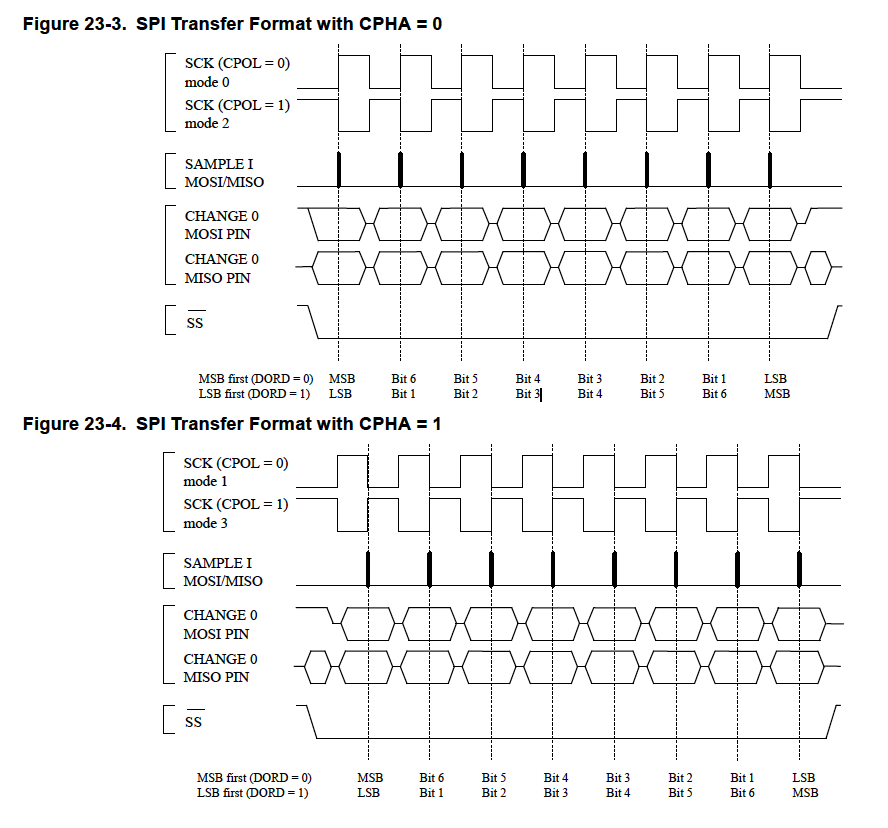

Introduction
SPI (Serial Peripheral interface) is a 4 wire serial synchronous full-duplex master-slave communication protocol.
- MOSI (master output slave in)
- MISO (master input slave output)
- SCLK (master generated clock signal)
- slave selected (chip enabled: low enable)
SPI has 4 communication mode
| SPI mode | Conditions | Clock leading edge | clock trailing edge |
|---|---|---|---|
| 0 | CPOL = 0, CPHA = 0 | rising - sample | falling - setup |
| 1 | CPOL = 0, CPHA = 1 | rising - setup | falling - sample |
| 2 | CPOL = 1, CPHA = 0 | falling - sample | rising - setup |
| 3 | CPOL = 1, CPHA = 1 | falling - setup | rising - sample |

Data length
Master's job
Master configures a mode that is compatible with slaves, generates clock signal. Send and request data.
3 wire communication
...